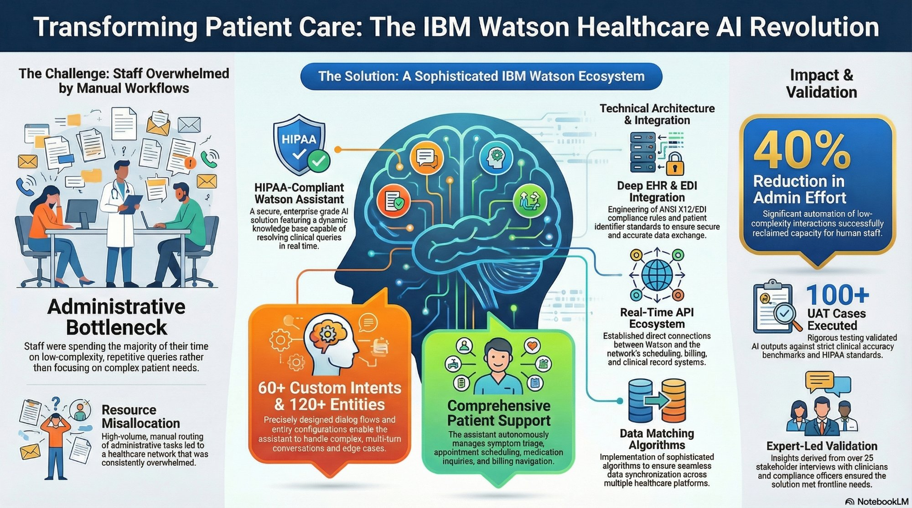

Introduction
Healthcare organizations do not struggle only because clinical demand is high. They also struggle because large portions of staff capacity are consumed by repetitive, low-complexity administrative interactions that interrupt workflows and reduce the time available for more serious patient needs. Appointment scheduling, billing navigation, medication-related questions, symptom triage, and policy clarification often create operational drag that is too frequent to ignore and too distributed to solve with staffing alone.
This project presents IBM Watson as the foundation for a healthcare AI architecture designed to reduce administrative overload while preserving compliance, routing precision, and workflow realism. The goal is not merely automation for speed. The goal is enterprise-grade orchestration: a system that can interpret patient intent, resolve routine needs safely, and escalate correctly when human intervention is required.
Why Administrative Overload Becomes a Clinical Capacity Problem
The Core Problem
In many healthcare environments, staff members spend a disproportionate amount of time responding to repetitive requests that do not require deep clinical reasoning but still demand accuracy, context, and timely handling. These interactions accumulate across scheduling, billing, medication questions, symptom intake, and patient navigation.
Why This Matters Strategically
When low-complexity requests dominate frontline capacity, the organization experiences more than inconvenience. It creates bottlenecks that delay service, increase friction, fragment the patient experience, and pull human attention away from higher-value care scenarios that genuinely require trained judgment.
Business Interpretation
This is not simply a staffing issue. It is an operating model issue. Manual handling of high-volume administrative work does not scale well, introduces inconsistency, and constrains the organization’s ability to absorb demand without increasing labor intensity.
Architect Perspective
The deeper design question is where intelligent automation can safely sit inside the workflow. A successful solution must recognize intent, manage dialogue across multiple steps, connect to enterprise systems, and apply compliance rules without creating new operational risk.
Strategic Framing
In healthcare, workflow inefficiency is not isolated from care quality. Every hour reclaimed from repetitive operational work is capacity that can be redirected toward complex patient needs, better escalation handling, and more meaningful clinical engagement.
Why IBM Watson Fits This Use Case
Intent and Entity Design
- IBM Watson Assistant can support high-volume conversational workflows through carefully designed intents and entities.
- In this case, the system is modeled to handle healthcare-specific administrative and clinical support interactions rather than generic customer service requests.
- That structure makes the assistant more reliable for real patient-facing operations because it is guided by defined language patterns and controlled routing logic.
Multi-Turn Clinical Support
- Healthcare questions are rarely single-turn. Patients often shift between symptoms, scheduling needs, insurance questions, and medication concerns in one conversation.
- A Watson-based design is useful here because it can support multi-turn flows that preserve context and move the user through structured resolution paths.
- This is essential in environments where incomplete or poorly routed dialogue creates downstream operational inefficiency.
Dynamic Resolution of Routine Queries
- A healthcare assistant becomes valuable when it can answer recurring questions consistently instead of pushing every interaction to a human queue.
- Watson supports this through a knowledge-driven assistant model that can standardize responses for repeatable tasks while preserving escalation pathways for ambiguity or risk.
Why This Is More Than a Chatbot
- The real value comes from how Watson is placed inside the enterprise workflow.
- It is not just a front-end conversation layer. It becomes an operational routing hub that connects patient language, business rules, system actions, and escalation decisions.
Design Principle
A healthcare virtual assistant becomes strategically valuable only when its conversational intelligence is tightly connected to workflow execution, policy logic, and safe escalation. Without that integration, it remains a demo. With it, it becomes infrastructure.
From Patient Input to Enterprise Action
Layer 1: User Interaction
The outermost layer captures patient or user input through a conversational interface. This is where the system receives requests related to symptom guidance, scheduling, billing questions, clinic navigation, or medication support. The experience must be simple for the user while still structured enough for downstream interpretation.
Layer 2: NLP Interpretation
Watson’s natural language layer classifies the request into intents and extracts important entities such as symptom types, appointment needs, insurance-related details, or patient identifiers. This is the point where free-form language is translated into operationally meaningful signals.
Layer 3: Middleware and API Routing
After intent interpretation, middleware and real-time APIs route the request to the correct operational system. This layer is critical because it translates conversational outcomes into enterprise actions such as scheduling lookups, billing checks, patient record retrieval, or escalation triggers.
Layer 4: Legacy and Clinical Systems
The final layer connects with EHR platforms, billing systems, scheduling systems, and other healthcare network infrastructure. This is where architectural realism matters most, because the AI solution must operate within existing enterprise constraints rather than assuming a greenfield environment.
The architecture is intentionally layered because healthcare transformation rarely starts with replacing core systems. It starts with adding an intelligent orchestration layer that can sit on top of existing infrastructure, reduce friction across fragmented workflows, and improve resolution quality without demanding total platform replacement.
Compliance, EHR Integration, and Data Matching
HIPAA and Auditability
- Healthcare AI systems must be designed with privacy, traceability, and controlled access as first-order requirements.
- That means secure handling of patient information, auditable actions, and clear policy boundaries around what the assistant can resolve autonomously.
- Compliance cannot be added later as documentation; it must be embedded in system behavior and integration design.
ANSI X12 / EDI and Operational Flow
- Healthcare operations depend on standards-based information exchange across insurers, billing workflows, and clinical systems.
- Real-world AI deployment therefore requires compatibility with interoperability rules and existing transaction logic, not just a polished conversational interface.
- This is what separates enterprise healthcare AI from consumer support automation.
Patient Identifier Discipline
- Accurate routing depends on correct patient identification, not just good intent recognition.
- Strong matching logic reduces the risk of duplication, retrieval errors, and incorrect downstream actions.
- In healthcare, record integrity is part of safety, not just efficiency.
Why Integration Is the Hard Part
- Many AI prototypes fail because they stop at inference and never fully solve secure system integration.
- The real difficulty lies in connecting policy-aware conversational intelligence to billing engines, scheduling systems, and clinical records without weakening trust or introducing operational ambiguity.
Architect Perspective
In healthcare, the hardest part of AI is rarely the model alone. It is the disciplined integration of language understanding, identity verification, system interoperability, and governance controls into a single dependable operational design.
Why This Design Is Operationally Trustworthy
Research and Stakeholder Alignment
A healthcare AI assistant should not be designed from technical assumptions alone. It requires qualitative grounding from the people closest to operational risk and care delivery. Clinicians, billing specialists, and compliance officers each bring a different perspective on where automation helps, where it breaks down, and where escalation is non-negotiable.
UAT and Clinical Accuracy
Validation in this context is not limited to generic software testing. It must include user acceptance scenarios, policy-sensitive edge cases, workflow handoff logic, and evaluation against the organization’s expectations for safe and accurate resolution. That is what makes the implementation credible.
Agile Refinement
Healthcare dialogue systems improve through iteration. Real-world feedback exposes misunderstood intents, weak vocabulary coverage, escalation gaps, and wording that does not match user behavior. A mature delivery model treats this as a continuous design loop rather than a one-time launch event.
Enterprise Readiness
A solution becomes enterprise-ready when design decisions can be defended from both technical and operational viewpoints. That includes why certain intents are automated, why others are escalated, how compliance is enforced, and how outputs are validated before broader deployment.
Why This Matters
Trust in healthcare AI does not come from intelligence claims. It comes from disciplined validation, stakeholder-informed design, safe workflow boundaries, and the ability to show that the system behaves consistently under real operational conditions.
What This Architecture Enables
Reduced Administrative Burden
- Automating high-volume routine interactions reduces time spent on low-complexity work.
- That shift helps staff focus on cases requiring human reasoning, patient judgment, and nuanced intervention.
- The impact is not just speed. It is capacity reallocation toward more valuable work.
Faster and More Accurate Routing
- When requests are understood and routed correctly in real time, friction declines across scheduling, billing, and navigation workflows.
- That reduces delays, decreases handoff confusion, and creates a more coherent patient support experience.
Scalability Without Linear Headcount Growth
- Healthcare demand often rises faster than administrative capacity.
- An AI-assisted workflow model helps organizations absorb more interaction volume without scaling purely through labor expansion.
- That makes the operating model more resilient.
Human Attention Preserved for Complex Care
- The deeper value of this architecture is that it protects scarce human attention.
- When routine work is handled more intelligently, clinical and operational staff can spend more energy on situations where human expertise matters most.
Final Business Interpretation
The success of a healthcare AI architecture should not be measured only by automation rate. It should be measured by whether it improves operational flow, preserves compliance, strengthens trust, and returns human capacity to the parts of healthcare that should never be reduced to repetitive workflow management.
Infographic & Presentation Deck
This visual artifact summarizes the full enterprise healthcare AI architecture through a transformation lens, showing the relationship between manual workflow pain points, Watson-based conversational design, compliance-aware system integration, and measurable operational outcomes.

Why This Matters
This project demonstrates that meaningful healthcare AI design is not just about deploying NLP or adding a virtual assistant to a website. It is about architecting a dependable operational layer that can interpret language, connect with enterprise systems, respect compliance boundaries, and improve workflow quality without disconnecting technology from care reality.
Portfolio Value
This artifact demonstrates solution architecture thinking at the intersection of AI, healthcare operations, compliance, and systems integration. It shows the ability to frame a real enterprise problem, justify why a particular AI approach fits, and design a workflow-aware architecture that balances automation with safety, governance, and implementation realism.